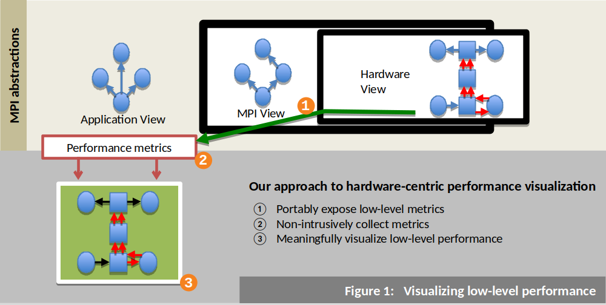
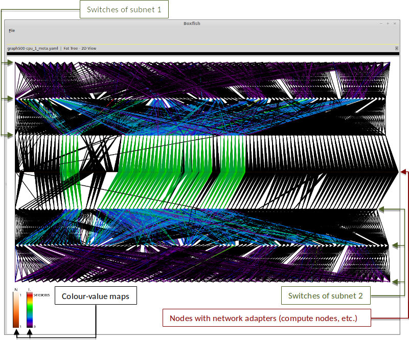

Tracking and Vizualizing MPI Link Traffic
Our work illustrates the limitations of current performance analysis methods for MPI collectives on large-scale systems, and proposes a new method that employs a hardware-centric approach based on lower-level communication metrics.
MPI libraries abstract the hardware layer of systems, making it hard to adequately assess the performance of message passing operations over the network layer. Tools for conducting performance analysis of MPI application try to maintain hardware portability by not penetrating this abstraction. This causes their process-centric analysis approach to fail in exposing the performance of MPI operations over the network layer.
Our approach (Fig. 1) successfully exposes this performance by tracking InfiniBand network communication in Open MPI using a new trace event that we added to the Peruse interface, a performance revealing extension for MPI. This event was at a lower level, closer to the hardware layer, than all other Peruse events in Open MPI. We built a portable and non-intrusive profiling library, named ibprof, which uses this newly added Peruse event to record an application's network communication profile and write it to OTF files. The Boxfish visualization tool was used to conduct hardware-centric analysis of the profile. However, we first extended Boxfish by creating a new, generalized visualization module that is capable of representing any 2D network topology, such as the fat-tree topology used by TSUBAME2.5.
Our results indicated that the average communication overhead incurred by profiling was: 2.06% for an MPI_Alltoall microbenchmark, 7.63% for MPI_Bcast microbenchmark, and 0.02% for the NPB FT application benchmark. Experiments were ran on 32 nodes of the TSUBAME-KFC system. The time taken to write OTF output files by our profiler was approximately 13 milliseconds. We then showed the scalability of our method by using the Graph500 benchmark on 512 nodes of TSUBAME2.5. The benchmark’s profile was visualized in Boxfish (Fig. 2), and we showed how performance metrics from multiple domains, such as the hardware and communication domains, could be easily connected and interacted with using our network visualization.
Figure 2: Boxfish visualization of the Graph500 benchmark Our Boxfish Fat Tree module is used to visualize our profile of the Graph500 benchmark running on 512 nodes of TSUBAME2.5. Network links are shown as coloured lines connecting switches to other nodes and other switches. The colour of each link reflects how much user-data was sent over that link. Colour-value maps (one for nodes and one for links) are used to map colours to performance values.
Finally, a case study of an under-performing MPI_Alltoallv collective proved the effectiveness of our analysis approach. In our case study, Vampir failed to provide any insight into the cause of the collective’s performance. However, for the same operation, our visualization of the network communication profile quickly identified a communication imbalance caused by the uneven distribution of data across the processes. By distributing the data more evenly, we reduced the runtime of the collective by approximately 25%.